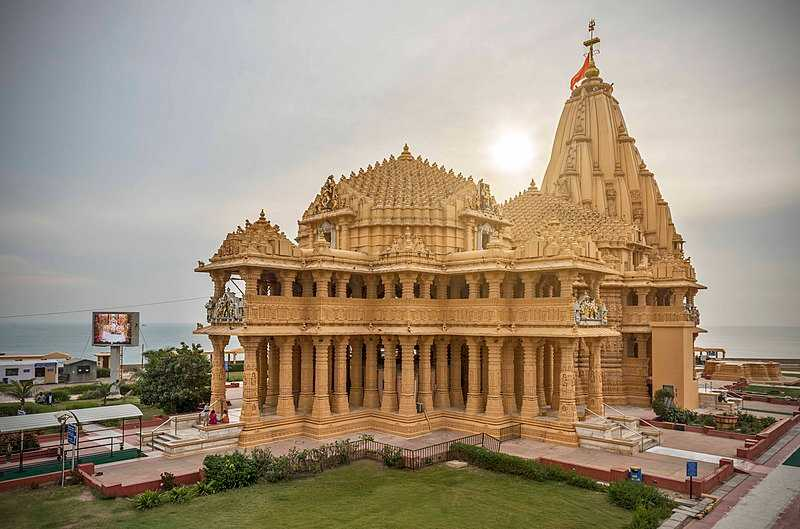
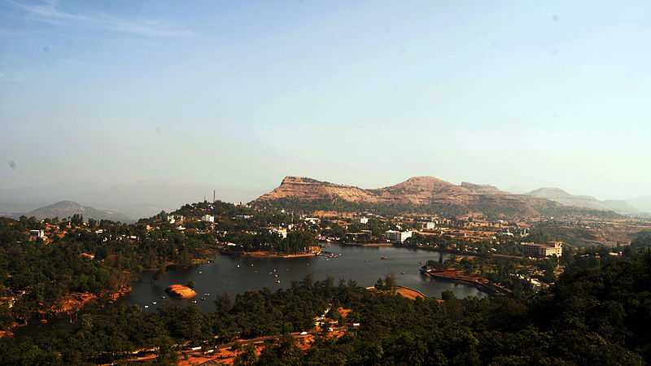
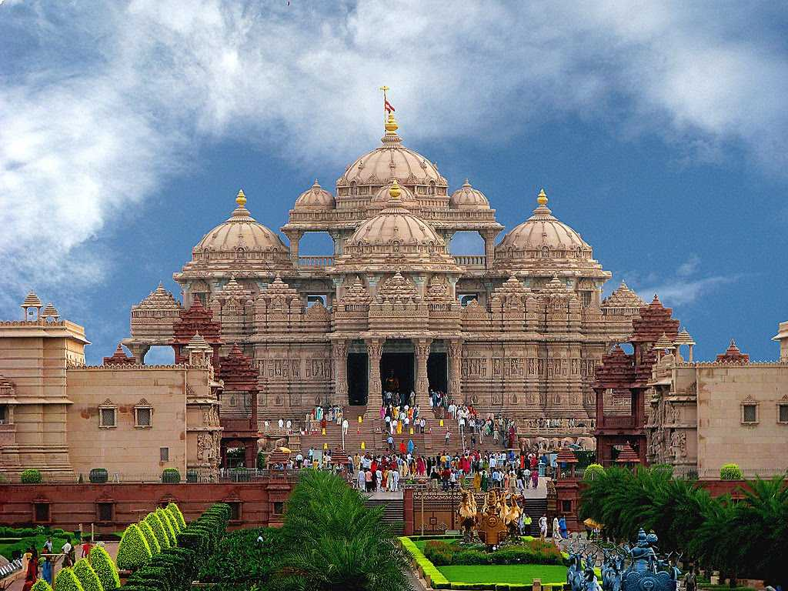
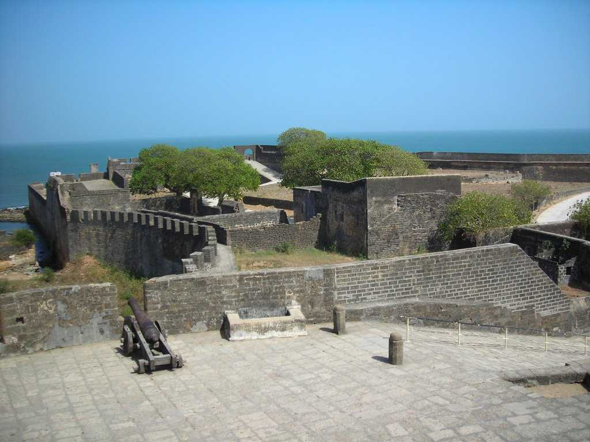

Ahmedabad Tourism
 A rapidly growing metropolis, an industrial hub, an educational hotspot, and a city with a magnificent past – Ahmedabad is one of the most important cities in Gujarat. Located on the banks of the Sabarmati River, Ahmedabad is the former capital of Gujarat, and its delicious food, colourful culture is making it a fast-growing tourist destination. The historic city of Ahmedabad or the old part of the city was declared as the UNESCO World Heritage Site.
A rapidly growing metropolis, an industrial hub, an educational hotspot, and a city with a magnificent past – Ahmedabad is one of the most important cities in Gujarat. Located on the banks of the Sabarmati River, Ahmedabad is the former capital of Gujarat, and its delicious food, colourful culture is making it a fast-growing tourist destination. The historic city of Ahmedabad or the old part of the city was declared as the UNESCO World Heritage Site.
Sabarmati Ashram, situated directly beside the Sabarmati river, is a quaint and peaceful ashram built by Mahatma Gandhi after he returned from South Africa. To this date, Gandhiji’s living quarters are preserved here and is now used as a museum where visitors can learn all about his life and his teachings. The infamous Dandi Salt March, which was a crucial point in India’s independence struggle, originated from this ashram.
Note: To see the clear img you have to drag cursor on it.
Kutch
 Virtually an island that resembles the shape of a tortoise, Kutch is an erstwhile princely state of India holding onto its grandeur nature from the past. Kutch is probably one of the most beautiful, yet surreal places in India with the vast expanses of the white salt desert.
Virtually an island that resembles the shape of a tortoise, Kutch is an erstwhile princely state of India holding onto its grandeur nature from the past. Kutch is probably one of the most beautiful, yet surreal places in India with the vast expanses of the white salt desert.
Kutch is also among the largest of India with a terribly low population density. Also, Kutch lies on the India-Pakistan border and you can see parts of Pakistan from Kutch. Kutch is also famous for crafts and embroidery works, Flamingo Sanctuary and Wild Ass Sanctuary. Bhuj is an ideal starting point to visit the Rann of Kutch. Beautiful beaches of Mandvi near Bhuj are also totally worth visiting during your trip to Kutch. Don't miss to see the ancient town of Dholavira.
Gir National Park
 Gir National Park and Wildlife Sanctuary is the only remaining home for the Asiatic Lions. Located in Talala Gir in Gujarat, the Sanctuary is a part of Kathiawar- Gir dry deciduous forests ecoregion. Gir National Park is closed from 16 June to 15 October every year and the best time for wildlife spotting is April and May.
Gir National Park and Wildlife Sanctuary is the only remaining home for the Asiatic Lions. Located in Talala Gir in Gujarat, the Sanctuary is a part of Kathiawar- Gir dry deciduous forests ecoregion. Gir National Park is closed from 16 June to 15 October every year and the best time for wildlife spotting is April and May.
Gir provides you with the unique experience of visiting a place which almost singularly plays a crucial and defining role in the preservation and sustaining of a certain species. The preservation of these lions was initiated by the Nawab of Junagadh when these were just about to enter the phase of extinction due to hunting.
The official count said that there were 411 lions in 2010. Also, there are roughly different 2375 species of fauna here with 38 species of mammals, over 300 species of birds, 37 species of reptiles and over 2000 species of insects. Other important wildlife forms found here are leopard, chausingha, spotted deer, hyena, sambar deer and chinkara.
Somnath

Somnath, literally meaning 'lord of the moon' is a pilgrim center and is home to one of the 12 Jyotirlingas. It is a town which derives much of its identity from the mythology, religion, and legends that surround it.
Primarily a temple town, Somnath is a place where a strong scent of religion and legends lingers around tourism and even daily life. Its spiritual environment is ornamented by the huge number of temples in the area, however, Somnath also offers beaches, museums and other attractions. While the Somnath temple and Somnath beach are the primary places to visit here, Gita Mandir, Balukha Tirtha, Kamnath Mahadev Temple, Somnath Museum are some of the other places that one can visit.
Saputara

Snuggled in the Sahyadris or the Western Ghats, Saputara is a quaint little hill station in the Dang district of Gujarat. Popular for lush green forests, undulating mountains, dazzling waterfalls, dreamy winding roads, livid landscapes and plenty of charming cubbyholes to spend time with your loved ones, the town is the first favourite among tourists. It is located at a height of 875 metres above sea level and is a perfect getaway for eco-lovers, wildlife enthusiasts and people who love adventure sports.
Located at a distance of four kilometres from the Maharashtra border and two hundred and fifty kilometers from Mumbai in Dang district, Saputara literally means habitat of snakes and the tribals of this region worship snakes, especially during Holi. It is a beautiful hilly region enriched with enormous greenery offering magnificent panaroma, tribal culture of a different sort and great trekking opportunities.
Akshardham Temple

Gandhinagar, the capital city of Gujarat, is located at a distance of around 23 km from Ahmedabad on the western bank of Sabarmati river. Gandhinagar, one of India's few planned cities encompasses Akshardham Temple, one of the country's most beautiful temple.
Gandhinagar offers a rich cultural heritage, beautiful temples and serene environment to all its visitors. Among other attractions are an enthralling Children's Park and uniquely built stepwell. The holy places in Gandhinagar like the Hanumanji Temple and the Brahmani Temple which in spite of not being so famous, are also worth visiting for an enriching experience.
Diu
Located near the port of Veraval, Diu is a small island which was earlier a Portuguese colony and is now guarded by beaches all around. Diu takes up most popularity given the ample number of beaches, along with Gujarat's southern coast such as the Nagoa beach, but has a lot more to offer too. Alcohol is legal in Diu
Rani Ki Vav
 Home to Rani Ka Vav, the latest Indian entrant to the list of UNESCO World Heritage Site, Patan is a treasure trove of architectural gems and ancient temples that has a history dating back to the medieval period. Situated in Gujarat, this place is located at the banks of what are the remains of ancient Saraswati river.
Home to Rani Ka Vav, the latest Indian entrant to the list of UNESCO World Heritage Site, Patan is a treasure trove of architectural gems and ancient temples that has a history dating back to the medieval period. Situated in Gujarat, this place is located at the banks of what are the remains of ancient Saraswati river.
Having been the capital of the state for as many as 650 years in the medieval period, Patan has a lot of historical value and has been a part of the research of archaeologists in the past. Just as it has temples, it also has Dargah and Jain temples. Patan is a spiritual city and strongly believes that it is their Kuldevi and her presence that has kept the town intact and its people happy and growing.